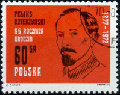
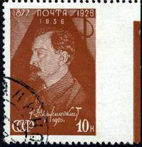
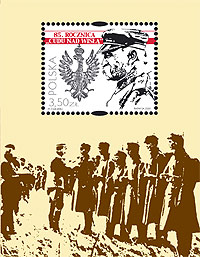
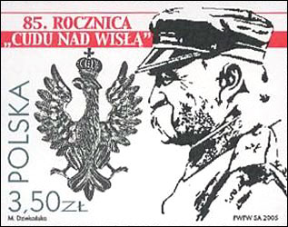
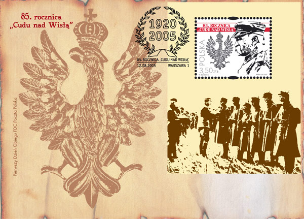
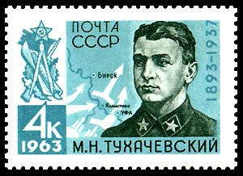

THE MIRACLE AT THE VISTULA RIVER
In 1972 Poland, then fully controlled by its 1939 invader Soviet Union, issued a stamp dedicated to Felix Dzerzhinsky, a Polish Communist revolutionary, famous as the founder of the Bolshevik secret police, the Cheka, later known by many names during the history of the Soviet Union. The agency became notorious for large-scale human rights abuses, including torture and mass summary executions, carried out during the Red Terror and the Russian Civil War. Source.
The Soviet stamp (Michel no. 566) was issued on 27th July 1937 and commemorates the 10th death anniversary of the communist leader. Its Polish sibling, on the left, commemorates the 95th birth anniversary of Dzerzhinsky, and was issued on 11th September 1972 (Mi. 2172).


The times fortunately changed in 1989, when Poland liberated itself from the imposed "protection" of its powerful neighbor; its stamps changed accordingly. We show below, on the left, the Poland miniature sheet, issued on 12th August 2005 ( Michel no. 4204). It commemorates the 85th anniversary of the Battle of Warsaw, the capital of Poland, positioned on the Vistula river.
In 1919 the Bolsheviks had gained the upper hand in the Russian Civil War, having dealt crippling blows to the Russian White Movement. Vladimir Lenin viewed Poland as a bridge to bring communism to Central and Western Europe, and the Polish–Soviet War seemed the perfect way to start. Bolshevik speeches asserted that the revolution was to be carried to western Europe on the bayonets of Soviet soldiers and that the shortest route to Berlin and Paris lay through Warsaw.


Before the Polish victory at the Vistula, both the Bolsheviks and the majority of foreign experts considered Poland to be on the verge of defeat. The decisive battle was fought from August 12–25, 1920 as Red Army forces commanded by Mikhail Tukhachevsky approached the Polish capital of Warsaw and nearby Modlin Fortress. On August 16, Polish forces commanded by Józef Pilsudski counterattacked from the south, forcing the Russian forces into a disorganised withdrawal eastward and behind the Neman River. Estimated Soviet losses were 10,000 killed, 500 missing, 10,000 wounded, and 66,000 taken prisoner, compared with Polish losses of some 4,500 killed, 10,000 missing, and 22,000 wounded. Source.

"Cudu nad Wisla", that appears on the above sheet and on the FDC means "the miracle at the Vistula", and proves how a smaller but heroic country can win against a bloody aggressor. Unfortunately, Poland will fell later, when on 17 September 1939, the same Soviet Red Army invaded the Poland from the East, this time in cooperation with the Nazi Germany troops, that attacked Poland from the West (see my page dedicated to this major event, that reprezented the start of the WW2).

The above stamp was issued by USSR on 16th of February 1963, Michel no. 2723, commemorating Tukhachevsky's 70 birth anniversary.
In the final stage of the civil war, Tukhachevsky commanded the Seventh Army when they suppressed the sailors' anticommunist revolt at Kronstadt in March 1921. He also ran the anti-partisan war against the Tambov Republic in 1921 and 1922. Tukhachevsky was known for using hostage execution and poison gas in his suppression of peasant uprisings. Source.All this explains the desperate defense and finally the unexpected victory of the Polish army (like later that of small Finland against the same ferocious enemy). Tukhachevsky was executed in 1937, when Stalin decided to eliminate his earlier bloody companions, and to put in the highest positions officers with cleaner hands, who were capable to win the war that he systematically prepared against the whole Europe (a war that they partially won, by defeating the Nazi Germany and by occupying for nearly a half of century the Eastern half of Europe).
From the newsgroup news:rec.collecting.stamps.discuss, where I announced on 2/18/2010 this page.
TC wrote: "A bit of European history I was not aware of. Many thanks for educating me.
I have often wondered how Russia might have progressed if Stalin had not eliminated so many senior army officers in his purges before the outbreak of the Second World War."My comment: "So few are aware of it, and yet it tells a lot about the beginnings of the communist imperialism. From the very start the communists leaders were aware that the communism cannot survive the comparison with the free countries, and therefore these should be "converted" by any means.
If Stalin hadn't eliminated the senior army officers compromised by crimes against their fellow countrymen (crimes for which Lenin and Stalin carry the highest responsibility though), he had totally lost the war that he prepared against the rest of Europe."
|
|
Created:
02/16/2010.
Revised: 1/10/2024.
|